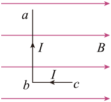

← 返回磁场总览
📚 知识框架（思维导图）
点击节点可跳转到对应小节 · 中心为「磁场对电流的作用」总主题
学习路径：
- ① 磁感应强度 — 定义、地磁场、矢量叠加
- ② 电磁感应现象 — 什么条件产生感应电流
- ③ 法拉第电磁感应定律 — 感应电动势大小
- ④ 楞次定律 — 感应电流方向判断（核心）
- ⑤ 安培力 — 通电导线在磁场中受力
- ⑥ 安培力的应用 — 电动机原理
- ⑦~⑨ 综合计算 / 高考刷题 / 动画演示（自由练习）
💡 本页为自由学习模式，所有小节都能直接查看；每节底部配有小测验，仅作自我检测，不影响浏览。
1磁感应强度及其叠加
1．磁感应强度
（1）定义
一段通电直导线垂直放在磁场中，所受的力 $F$ 与导线中的电流 $I$ 和导线的长度 $L$ 的乘积的比值，叫作磁感应强度。
（2）定义式
$$B = \frac{F}{I\,L} \quad （I \perp B）$$
（3）矢量性
磁感应强度是矢量，它的方向就是该处小磁针 N 极的受力方向。
⚠️ 注意：电流元所受的磁场力 $F$ 与 $B$ 的方向垂直（由左手定则判定），不要误认为 $F$ 与 $B$ 同向。
（4）电场强度 $E$ 与磁感应强度 $B$ 的比较
| 比较项目 | 电场强度 $E$ | 磁感应强度 $B$ |
|---|
| 物理意义 | 描述电场强弱和方向的物理量 | 描述磁场强弱和方向的物理量 |
| 定义的依据 | （1）电场对电荷 $q$ 有作用力 $F$；（2）对电场中任一点，$F\propto q$，$\dfrac{F}{q}$ 为恒量（由电场决定）；（3）不同位置恒量一般不同；（4）比值可表示电场强弱 | （1）磁场对直线电流 $I$ 有作用力 $F$；（2）只考虑电流方向垂直于磁场时，$F\propto IL$，$\dfrac{F}{IL}$ 为恒量（由磁场决定）；（3）不同位置恒量一般不同；（4）比值可表示磁场强弱 |
| 定义式 | $$E = \frac{F}{q}$$ | $$B = \frac{F}{I\,L}$$ |
| 决定因素 | 由电场决定，与试探电荷无关 | 由磁场决定，与电流元无关 |
| 方向 | 该点正电荷的受力方向 | 小磁针 N 极的受力方向（电流元受的 $F$ 与 $B$ 垂直） |
| 场的叠加 | 遵循矢量的平行四边形定则 | 遵循矢量的平行四边形定则 |
| 单位 | $1\ \text{N/C} = 1\ \text{V/m}$ | $1\ \text{T} = 1\ \text{N/(A·m)}$ |
2．地磁场
地球是一个巨大的磁体，地球周围空间存在的磁场叫地磁场。
地磁场的三大特点
- ① 地磁场的 N 极在地球南极附近，S 极在地球北极附近。地理两极与地磁两极并不重合，因此磁针并非准确指向地理南、北，其间夹角叫磁偏角。
- ② 地磁场方向在南半球斜向上，在北半球斜向下，与地球表面成一定角度，叫磁倾角。
- ③ 在赤道平面上，到地心等距离的各点，地磁场强弱相等，且方向水平。
3．磁感应强度矢量的叠加
磁感应强度是矢量。当空间存在几个磁体（或电流）时，每一点的磁场等于各个磁体（或电流）在该点产生磁场的矢量和。叠加时遵循平行四边形定则。
📌 解题思路：
- 定位场源：确定需求解磁场的点，若场源为通电导线，用安培定则判定各场源在该点产生磁场的方向（如图中导线 M、N 在 c 点产生的 $B_M$、$B_N$）。
- 矢量合成：应用平行四边形定则将各分量合成，得到合磁场 $B$。
例题：空间某点同时存在的两个磁场分量大小均为 $B_0$，且夹角为 $120^\circ$，求该点合磁感应强度 $B$。
解：由平行四边形定则，两个等长矢量夹角为 $120^\circ$ 时，合矢量大小为 $B = 2B_0\cos 60^\circ = B_0$，方向沿角平分线。
答：合磁感应强度大小为 $B_0$。
2电磁感应现象
产生感应电流的条件
闭合电路的一部分导体在磁场中做切割磁感线运动，或者穿过闭合回路的磁通量发生变化时，回路中就会产生感应电流。
📌 两个条件（缺一不可）：
- 电路必须闭合；
- 穿过回路的磁通量 Φ 发生变化（$\Delta\Phi \neq 0$）。
⚠️ 注意：磁通量变化可以由 B 变化、S 变化 或 夹角 θ 变化 引起。只要 $\Delta\Phi\neq0$ 且回路闭合，就有感应电流；若回路不闭合，则只有感应电动势，没有感应电流。
3法拉第电磁感应定律
感应电动势的大小
电路中感应电动势的大小，跟穿过这一电路的磁通量的变化率成正比。
$$E = n\frac{\Delta\Phi}{\Delta t}$$
其中 $n$ 为线圈匝数。对于单匝线圈（$n=1$）：
$$E = \frac{\Delta\Phi}{\Delta t}$$
若导体棒以速度 $v$ 垂直切割磁感线（棒长 $L$，磁感应强度 $B$）：
$$E = B L v$$
📌 区分：法拉第定律中的 $\dfrac{\Delta\Phi}{\Delta t}$ 是变化率（斜率），不是变化量 $\Delta\Phi$，也不是磁通量 $\Phi$ 本身。磁通量最大时变化率可能为零。
4楞次定律（判断感应电流方向）
内容
感应电流具有这样的方向，即感应电流的磁场总要阻碍引起感应电流的磁通量的变化。
阻碍变化 ≠ 阻止变化
判断步骤（四步法）
- 明确原磁场的方向（穿过回路的磁场方向）；
- 判断原磁通量是增加还是减少；
- 根据楞次定律：增则感应磁场反向阻碍，减则感应磁场同向补充；
- 由感应磁场方向，用右手螺旋定则判断感应电流方向。
📌 口诀记忆："增反减同"——磁通量增加，感应磁场与原磁场反向；磁通量减少，感应磁场与原磁场同向。
⚠️ 另一种表述（更通用）：感应电流的效果总是阻碍相对运动 / 阻碍变化。例如磁铁靠近线圈，线圈近端呈同名磁极相斥；磁铁远离，呈异名磁极相吸。
右手定则（切割情形专用）
对于导体棒切割磁感线，可直接用右手定则：伸开右手，让磁感线穿入手心，大拇指指向导体运动方向，四指所指即感应电流方向。
⚠️ 左、右手再次区分：右手（发电，得电流方向）用于电磁感应；左手（受力）用于通电导线/电荷在磁场中受力。口诀仍为 "左力右电"。
5安培力（磁场对电流的作用）
一、安培力的方向 —— 左手定则
伸开左手，磁感线穿入手心，四指指向电流方向，拇指指向安培力方向。安培力方向垂直于 $B$ 与 $I$ 所决定的平面。
📌 关键理解：安培力 既垂直于 B，也垂直于 I，即垂直于 B 与 I 决定的平面。磁感线方向不一定垂直于电流方向，但安培力方向一定与磁场方向和电流方向都垂直——大拇指一定要垂直于磁场方向和电流方向决定的平面。
⚠️ 易错点：不能认为"磁场与电流垂直时安培力才垂直"。无论 B 与 I 是否垂直，安培力 F 永远垂直于 B、垂直于 I、垂直于它们所构成的平面。
二、安培力的大小
当磁感应强度 $B$ 的方向与导线方向成 $\theta$ 角时，一般表达式：
$$F = B\,I\,L\,\sin\theta$$
这是一般情况下安培力的表达式，以下是两种特殊情况：
1．导线与磁场平行（$\theta = 0^\circ$）：安培力为零
$$F = BIL\sin 0^\circ = 0$$
磁场与电流平行时导线不受安培力。
2．导线与磁场垂直（$\theta = 90^\circ$）：安培力最大
$$F_{\max} = B\,I\,L$$ （$L$ 为有效长度）
三、有效长度 $L$
📌 弯曲（或任意形状）导线的有效长度：等于连接导线两端点的直线段长度，相应的电流方向沿两端点连线由始端流向末端。当 $B$、$I$ 垂直时，公式 $F = I L B$ 中的 $L$ 即为此有效长度 $l$。
📌 任意形状闭合线圈：对于任意形状的闭合线圈，其两端点重合，有效长度均为 $0$，所以通电后在匀强磁场中受到的安培力的矢量和为 0：
$$\sum \vec F = 0 \qquad （任意闭合线圈，匀强磁场中）$$
例题：一段弯曲导线两端点 A、B 相距 $l_0$，通以电流 $I$，置于垂直纸面向里的匀强磁场 $B$ 中（且 $B$ 与导线整体垂直），求导线所受安培力。
解：弯曲导线的有效长度 $L = l_0 = |AB|$。
$F = B I L = B I l_0$，方向由左手定则判定（垂直于 AB 连线）。
四、安培力做功与洛伦兹力
📌 安培力可以做功：安培力是电动机将电能转化为机械能的力（与洛伦兹力不同）。
安培力是大量定向移动电荷所受洛伦兹力的宏观合力。要理解"安培力能做功而洛伦兹力不做功"，关键在洛伦兹力的方向性质：
洛伦兹力 $\vec{f} = q\,\vec{v}\times\vec{B}$，其方向始终垂直于电荷速度 $\vec{v}$
- 洛伦兹力方向时刻与速度方向垂直，故瞬时功率 $P = \vec{f}\cdot\vec{v} = 0$，永不做功——它只改变电荷速度的方向，不改变速度大小。
- 安培力 $F = BIL$ 是导线内所有电荷所受洛伦兹力的合力在垂直于导线方向的分量；导线被约束不动（或整体运动）时，安培力可对导线做功，能量来自电源（电场对电荷做功），并非洛伦兹力直接提供。
- 从微观看，洛伦兹力可分为"约束导线"与"推动电荷沿导线"两个分量：垂直导线的分量表现为安培力，沿导线方向的分量恰好抵消电场力做功——洛伦兹力总功始终为零。
📌 一句话记忆：洛伦兹力永不做功（只拐弯、不改速）；安培力是它"被导线约束后"的宏观表现，可以对导线做功。
6安培力的应用
直流电动机原理
通电线圈在磁场中受安培力作用而转动。当线圈平面与磁场平行时力矩最大；通过换向器不断改变电流方向，使线圈持续单向转动。
磁电式电流表
通电线圈在辐向磁场中受力矩偏转，磁场为辐向均匀，使偏转角度与电流成正比，故可均匀刻度。优点：灵敏度高；缺点：怕过载。
| 装置 | 能量转化 | 关键结构 |
|---|
| 直流电动机 | 电能 → 机械能 | 定子磁场、转子线圈、换向器 |
| 磁电式表头 | 电能 → 指针偏转动能 | 辐向磁场、游丝、线圈 |
7互动计算练习
① 感应电动势（磁通量变化率）
② 切割磁感线电动势
③ 安培力
8高考刷题（精选）
选择题
选择根据楞次定律，感应电流的磁场（ ）
A. 总是与原磁场方向相反 B. 总是阻碍原磁通量的变化
C. 总是增强原磁场 D. 总是与原磁场方向相同
解析：楞次定律的核心是"阻碍变化"——磁通量增加时感应磁场反向，减少时同向。故选 B。
选择一根导体棒在匀强磁场中匀速垂直切割磁感线，关于感应电动势正确的是（ ）
A. $E = \dfrac{\Delta\Phi}{\Delta t}$ 不适用于切割情形
B. $E = BLv$，与切割速度成正比
C. 棒不动时磁通量变化率最大
D. 感应电动势与棒长无关
解析：导体棒垂直切割时 $E = BLv$，与 $v$、$L$ 均成正比；$E=\Delta\Phi/\Delta t$ 是普遍式，切割情形是其推论。故选 B。
真题（2023·江苏·高考真题）如图所示，匀强磁场的磁感应强度为$B$。L形导线通以恒定电流$I$，放置在磁场中。已知ab边长为$2l$，与磁场方向垂直，bc边长为$l$，与磁场方向平行。该导线受到的安培力为（ ）

A．0 B．$BIl$ C．$2BIl$ D．$5BIl$
解析：因bc段与磁场方向平行，则不受安培力；ab段与磁场方向垂直，受安培力为 $F_{ab}=BI\cdot 2l=2BIl$。故该导线受到的安培力为 $2BIl$，选 C。
解答题
解答一个 50 匝的线圈，在 0.2 s 内磁通量从 0.04 Wb 均匀减小到 0.01 Wb。求感应电动势大小；若线圈电阻为 5 Ω，求感应电流。
$\Delta\Phi = 0.04 - 0.01 = 0.03\,\text{Wb}$，
$E = n\dfrac{\Delta\Phi}{\Delta t} = 50\times\dfrac{0.03}{0.2} = 7.5\,\text{V}$，
$I = \dfrac{E}{R} = \dfrac{7.5}{5} = 1.5\,\text{A}$。
9动画演示
磁铁插入 / 拔出线圈（楞次定律）
拖动下方按钮模拟磁铁运动，观察电流表指针偏转方向（红=N极向下插入，蓝=拔出）。
状态：静止（无感应电流）
10方法：楞次定律的拓展与应用
1．楞次定律的一般表述
电磁感应的效果总是要阻碍引起电磁感应的原因。
2．四种常见的“阻碍”形式
- 阻碍原磁通量的变化——增反减同。
- 阻碍导线的相对运动——来拒去留。
- 通过线圈面积的变化来“反抗”——增缩减扩。
- 阻碍自身电流的变化——自感现象（将在后面学到）。
3．角度一：“增反减同”法
感应电流的磁场总要阻碍引起感应电流的磁通量（原磁场磁通量）的变化。
- 当原磁场穿过闭合回路的磁通量增加时，感应电流的磁场方向与原磁场方向相反。
- 当原磁场穿过闭合回路的磁通量减少时，感应电流的磁场方向与原磁场方向相同。
📌 口诀：增反减同。
4．角度二：“来拒去留”法
由于磁场与导体的相对运动产生电磁感应现象时，产生的感应电流与磁场间有力的作用，这种力的作用会“阻碍”导体与磁场间的相对运动。
📌 口诀：来拒去留。
5．角度三：“增缩减扩”法
就闭合回路的面积而言，收缩或扩张是为了阻碍穿过回路的磁通量的变化。若穿过闭合回路的磁通量增加，面积有收缩趋势；若穿过闭合回路的磁通量减少，面积有扩张趋势。
📌 口诀：增缩减扩。
⚠️ 说明：此法只适用于回路中只有一个方向的磁感线的情况。